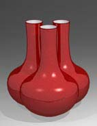

| Paperslip
by Steven Goldate
Inspired by a mid 18th century Qing dynasty ‘triple’
cloisonné vase, I recently embarked on a multi-faceted project
that would challenge many of my skills. In the course of this project
I acquired some new skills and came up with some – I hope
– novel solutions to problems that I was presented with. The
focus of this article is on the main material I used – paperslip,
and on slip casting in general.
Most
people by now would have heard of paperclay.
It has been the topic of a number of articles, e.g. by Graham
Hay and Gaye Stevens
and a of couple of books (notably Rosanne
Gault, Paperclay). Surprisingly, when I mention to
people that I am experimenting with paperslip, they nod in recognition,
as if this was a material well known to them. However, I am not
aware of many people having experimented with it or published anything
on the topic.
So
just what is paperslip? Answer: a casting slip, into which a certain
amount of paper pulp has been mixed. Why use paperslip? Answer:
because of the great drying and gluing qualities it offers, similar
to paperclay. In the following, I would like to go into some detail
on the advantages, disadvantages (if any) of paperslip and the processes
connected with it.
The problem I was originally presented with was how to make an
intersecting three-necked vase from clay, which I had originally
seen in cloisonné. For the 40-50 cm high piece I was envisioning,
casting seemed to be the only viable option. I also decided that
some paper pulp added to my slip would improve it’s workability
in the leatherhard to dry state. I set about coil building a model
from which I made a two piece mold, that sat on a plaster base.
The idea was to cast the pieces in paperslip, then cut the sides
at 120 degree angles and glue them together with more slip. In reality,
this turned out to be impossible to do. After cutting the sides,
the neck’s weight made it sag slightly to the unsupported
side. My necks had to be parallel, so I never made it to the gluing
stage with these casts.
Back to the drawing board. Literally. I decided I would make a
new mold from a model that already had the sides ‘pre-cut’
at the necessary 120 degrees. This way, the neck would be supported
and I could glue the walls together relatively effortlessly. However,
this gave rise to another problem – how to make a model, so
that it’s neck wouldn’t sag? I ended up making a double-walled
vessel, where the neck extended into the belly of the form, down
to the base so it was self-supporting. Again, this model was coil
thrown.
The next step was to make the walls. These had to not only be at
an angle of 120 degrees to each other, but also perpendicular. To
make sure I got these angles right, I constructed a ‘gauge’
of sorts. This was made from particleboard with the help of a right
angle and compass. After cutting the model’s belly at roughly
120 degrees, I was then able to attach flat slabs fairly accurately
with the help of my ‘calibrated’ gauge. I wound up with
quite a satisfactory model.
With shrinkage and cracking of coils in mind, I wasted no time
in pouring the plaster. I did this using a method shown to me by
Kurt Weiser of Arizona
State University. His method is to wait until the plaster
starts to stiffen and then to ‘slop’ it on the model
by hand. Weiser first pours a thin layer over the model to get a
really smooth, even coat. Then, using a new batch of plaster, molds
this on by hand, immediately after it has started to stiffen. The
first thin layer didn’t work for me. I found it didn’t
adhere to the mold sufficiently, parts sticking to the model and
flaking off. I skipped this stage and got a very good surface anyway.
I don’t really want to go into the intricacies of mold making
here – enough has been written about that already. But I do
want to talk about cottles.
What
is a cottle? Answer: a cord of some sort, which is tied around a
mold so it holds together when you pour the slip in. This usually
works fine for small molds. But some molds, like the ones I was
working on, took in the order of 30 liters (63 pints) of slip. That’s
probably about 50 kilos (110 pounds) plus the weight of the mold
itself we’re talking about. Having had the experience of losing
slip from an insecurely fastened mold, I decided something more
efficient was needed. My method consists of drilling holes through
the sides of the mold, pushing bolts through and securing these
with nuts. Never, ever will a mold come apart again using this method.
When designing the mold, it helps to modify the design slightly,
incorporating flanges to accommodate the pins. You may also want
to embed some rings into the plaster for protection and strength.
A good alternative to drilling the holes might be to pour the mold
with some dowling in place, which could be easily removed once the
plaster has hardened sufficiently. Bolts of just about any length
can be obtained from a good hardware store.
Weiser had told me that it was quite possible to stick pieces of
slipcast clay together without any special treatment, but for what
I had in mind I was skeptical. Being a fan of paperclay, I thought
paperslip would be an ideal material to work with. Paperclay gives
greenware great strength, minimizes (if not eliminates) cracking
and reduces weight and shrinkage. When making paperclay or paperslip,
one of the first considerations is what sort of paper to use. I
found that newsprint and office shreddings worked equally well for
me. As far as slips go, any commercial or home made slip should
work well. Keep in mind that the paper will introduce a small amount
of calcium carbonate (used in paper as a filler) to the mix, which
may raise the maturation temperature. However, with the quantities
of paper I am suggesting to use, this shouldn’t be a problem.
Whichever paper you use, it is important to let it soak for at
least a week or two. This helps to break down the fibers. Another
option might be to boil the pulp, although I haven’t tried
this yet. Another factor is the size of your pre-pulping paper shreds
– the smaller they are, the finer the fibers of your pulp
will turn out. Because we are casting, it’s better to have
smaller fibers that can mix well with the slip, creating as homogenous
a mix as possible. Once the paper has soaked long enough, the mixture
can be worked on with a drill mixer attachment or blender. This
is to further beak down the fibers. (Just down tell your partner
you’re using his/her favorite $90 Braun kitchen blender for
the purpose…)
After mixing the pulp sufficiently (a matter of personal judgment),
it can be put in a kitchen strainer and left to drip-dry for a bit,
or some of the water can be squeezed out. This is so that we don’t
introduce too much extra water into our slip. On the other hand,
the paper pulp should not be so dry, as to thicken the slip so that
loses it’s easy pouring quality. Add about 10% by weight of
medium wet paper pulp to your slip and give it a good mix with your
mixer attachment. For paperslip, this amount should be enough. Paperclay
can take up to as much as 50% paper content, but with slip, the
casting qualities would be reduced considerably.
Don’t
use new paperslip immediately. The mixing action introduces lots
of air bubbles into the mix. When you pour a cast, these rise to
the surface and create small bubbles in the walls and on the surface
of the piece. These bubbles can eventually lead to pinholing –
not good! For this reason, it’s a good idea to let fresh paperslip
rest overnight. Before using it, mix it by stirring slowly it with
a stick, being careful not to introduce any air. Another way of
inadvertently introducing bubbles into the slip is by pouring it
from a height. The splashes and splatters generated by gravity introduce
– you guessed it – more air bubbles! The solution is
to pour the slip down a slide of some sort, e.g. a piece of plastic
pipe, available in various diameters from hardware stores. (Tip:
sandpaper the edges, so they don’t damage your mold’s
surface.) Apart from some of the things mentioned above, general
rules of slipcasting apply.
I was quite happy with the results of my mold and cast. The next
stage was to stick three sections together. I scoured the walls
of three leatherhard pieces with a sawtooth blade. After brushing
on fresh slip, two sides could be joined together, carefully aligning
the edges and the inner ‘spine’. The same procedure
was followed with the third piece, except that there were four walls
to join. This is where you find out if your angles are correct!
If there are small gaps here and there between the seams, these
can be filled in with slightly stiffened paperslip. This technique
proved itself – not a single crack appeared anywhere. The
downside is that the walls can soften too much and make joining
difficult. When I tried to join pieces by rewetting the walls after
they were bone dry, some small cracks did appear the bisque firing.
It might be possible to fill these and re-bisque the piece.
What I ended up with, was a three-necked, three chambered vase.
Later, to save clay, reduce weight (not great in any case) and reduce
the ‘gluing’ area, I decided to cut out the walls, leaving
a one inch rim to join. In this case, I ended up with a three-necked,
one-chambered object. Decorating these objects is going to take
some thought and will be a challenge. As they are in a sense three
independent, intersecting pieces, it would be astute to decorate
each one somewhat differently, enhancing it’s individuality,
in contrast to a uniform glaze. However, that may become another
story altogether.
Related links:
More on Paperclay
Porcelain Paperclay
Slipping
into Paperclay
More Articles
|